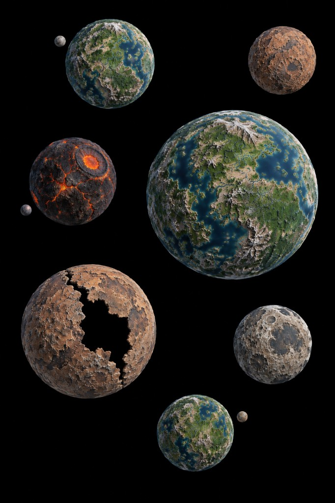

Verners System original art: named worlds in one system, lakes on planets, void between them.

Verner charted the family of globes and refused to pick a favorite. Each world still wears its own water and dust. The black between them is the real sea now.
Island-hop with Landers. Harbor fleets own a planet's lakes; Starport fleets own the lanes. Take one world fully before you scatter hulls across three.
See also: Collision · Comet's Pass · play Marauder's Sea free